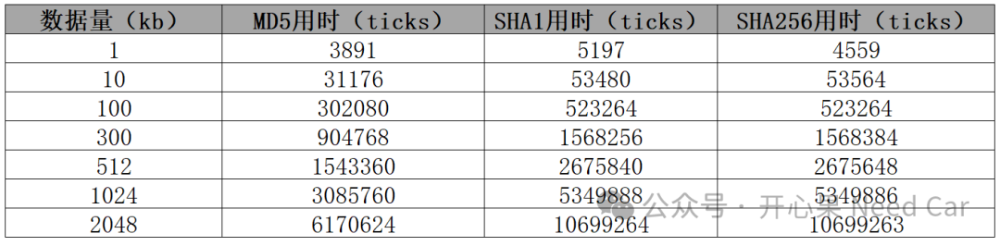
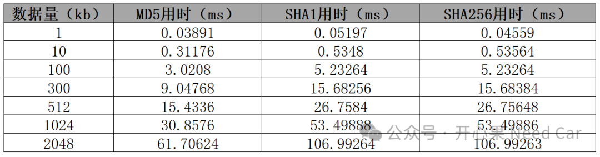
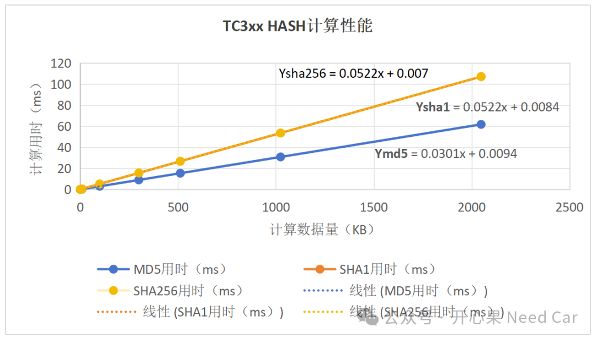
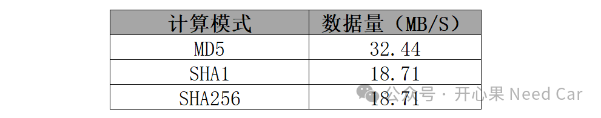

开心果 Need Car · 2025-01-16T06:38:00+08:00 · 微信原文
工程开发中，尤其对于信息安全，我们会关注所用算法的性能，以此来获悉系统的性能瓶颈。这对于优化资源，开发出符合预期的产品至关重要，那么，你知道项目中的Hash性能是多少吗？
本文，着重讨论一下TC3xx的MD5、SHA1、SHA256硬件加速性能。
MD5、SHA1、SHA256所用ticks统计如下：

MD5、SHA1、SHA256所用时间（ms），统计如下：

MD5、SHA1、SHA256数据变化趋势如下：

提示：如上数据以512bit批量计算，sha256指sha2-256。
通过如上统计，得到如下结论：
MD5的计算性能高于SHA1和SHA256；
SHA1和SHA256计算性能近似相等
虽然MD5已经不推荐使用，但是MD5的计算性能明显优于SHA1和SHA256，所以，在性能受限的某些工程场景，MD5依然是一个不错的选择。
MD5、SHA1、SHA256功能验证所用Python脚本链接如下：
https://onlinegdb.com/lJPb88QtI
（二）数据拟合分析
通过如上数据，拟合线性公式如下：
Ymd5 = 0.0301x + 0.0094
Ysha1 = 0.0522x + 0.0084
Ysha256 = 0.0522x + 0.007

往期精彩回顾